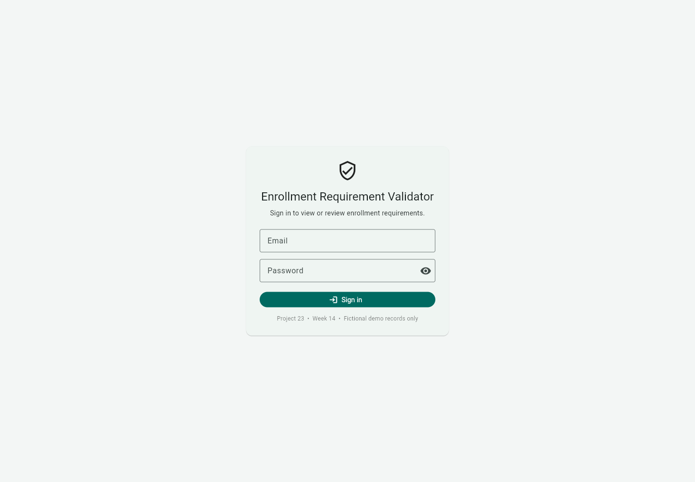
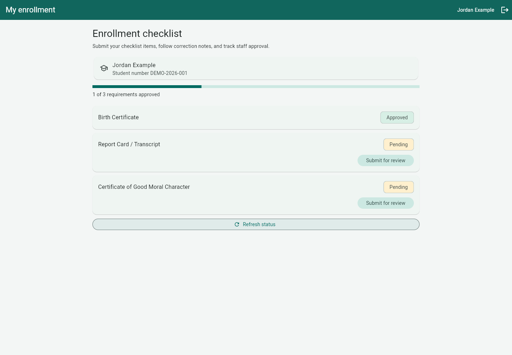
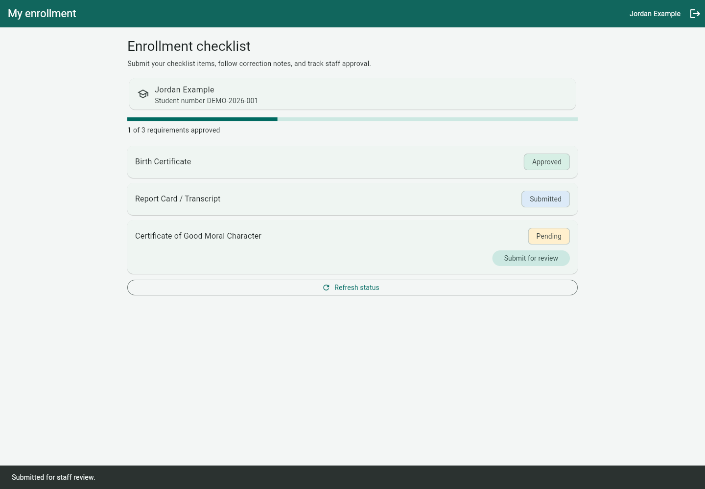
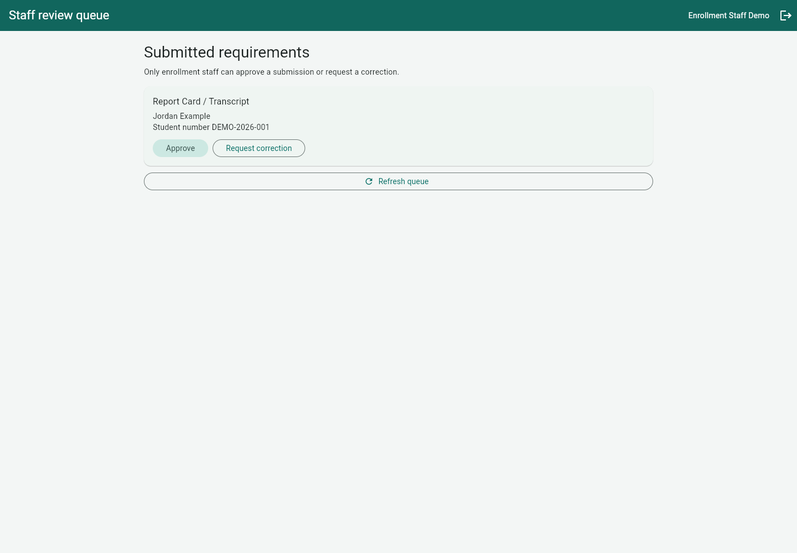
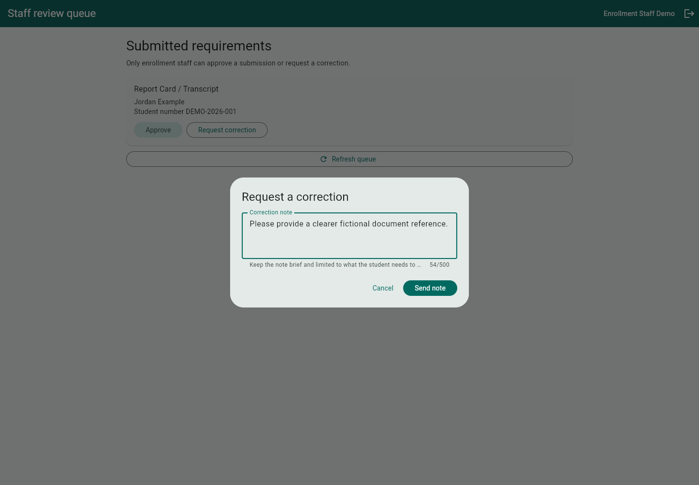
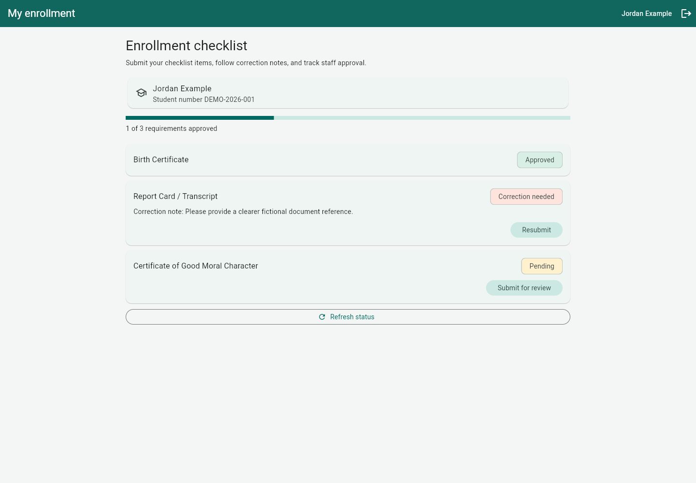
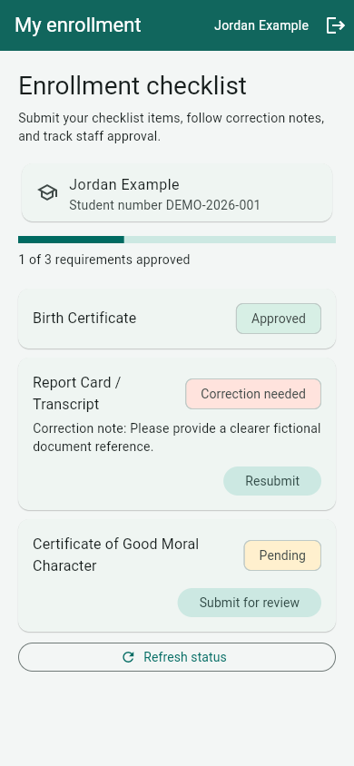

Secure sign in
The actual Flutter sign-in screen requires an email and password before showing enrollment records.

01_sign_in.png · Actual application capture · Fictional demo dataPROJECT 23 / PFEBSIT 002 / WEEK 14
Sam Russell M. So · BSIT 3A · University of La Salette
Fresh application screenshots and actual test results, 17 November 2026. Open the finished report
The actual Flutter sign-in screen requires an email and password before showing enrollment records.

01_sign_in.png · Actual application capture · Fictional demo dataThe signed-in fictional student sees assigned requirements. The progress bar counts approved items only.

02_student_checklist.png · Actual application capture · Fictional demo dataStudent submission changes the checklist state to Submitted. Only staff can make an approval decision.

03_student_submitted.png · Actual application capture · Fictional demo dataThe staff-only screen lists submitted requirements and offers approval or a correction request.

04_staff_review_queue.png · Actual application capture · Fictional demo dataStaff enter a short correction note when returning a requirement. The API rejects a return without a note.

05_staff_correction_note.png · Actual application capture · Fictional demo dataThe student sees the returned requirement, the staff correction note, and a Resubmit action.

06_student_correction_feedback.png · Actual application capture · Fictional demo dataThe same Flutter checklist is rendered in a 390 by 844 browser viewport.

07_mobile_checklist.png · Actual application capture · Fictional demo dataLaravel: 7 tests, 32 assertions. Live API: 26 of 26 checks passed. Flutter analysis, widget test and debug web build passed.
Raw API capture · Laravel results · Postman collection
The HTTP scenarios passed through Node fetch and through Postman Newman, with 26 assertions and zero failures. This gallery does not represent a Postman GUI run or a production deployment.